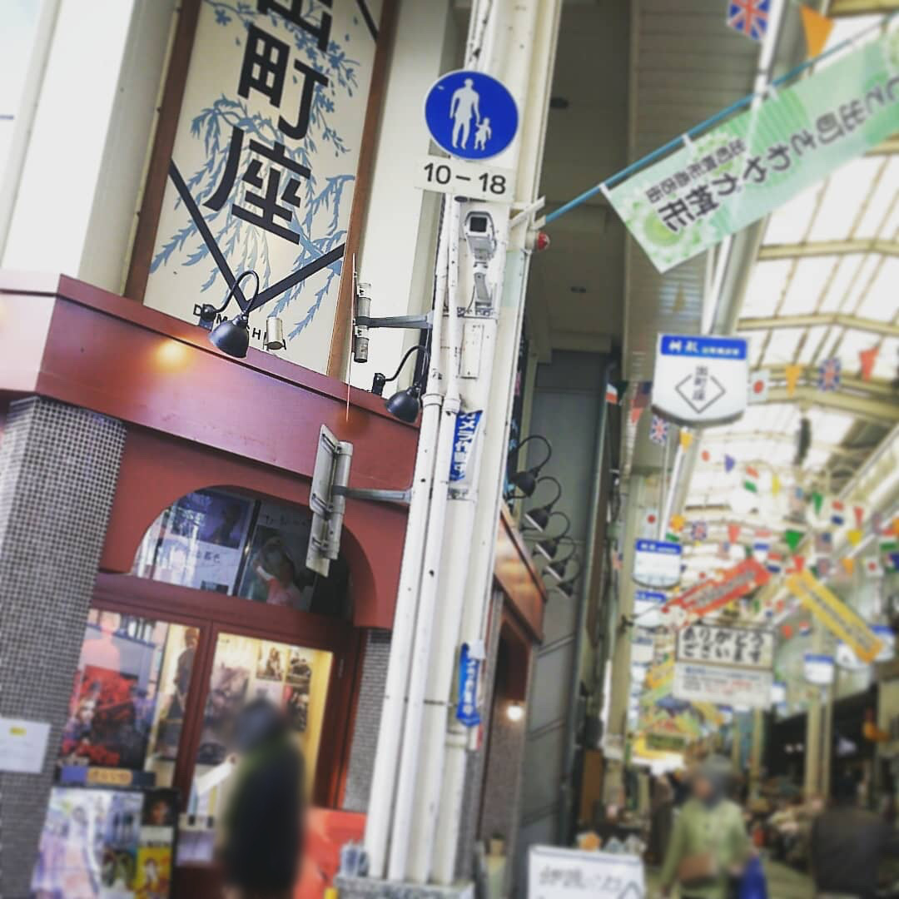
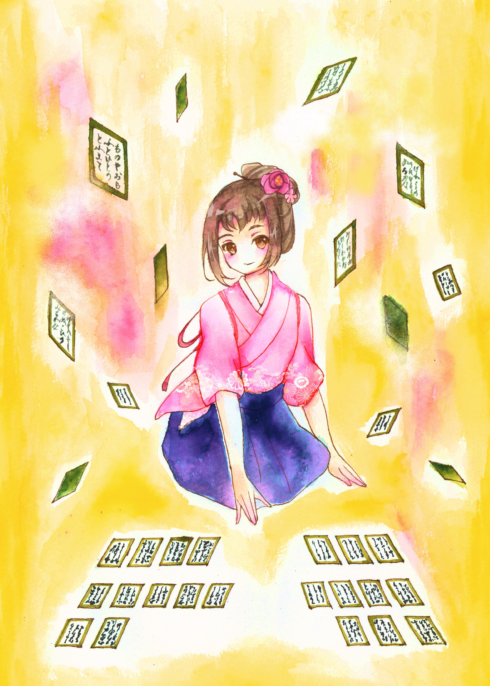

Profile

馬場 史織/Shiori Baba
1994年埼玉県出身。
2015年3月、同志社女子大学 表象文化学部 日本語日本文学科(国内留学協定)を修了。
2017年3月、日本女子大学 人間社会学部 文化学科を卒業。
2017年12月、株式会社アウトソーシングテクノロジーに入社し、
鉄道会社向け列車運行管理システムの品質保証(QA)業務に約2年従事。
イラストを描くこと・街歩きが趣味。
好きな京都のスポットは鴨川デルタとセカンドハウス出町店。
Skill : HTML/CSS/Illustration/System quality assurance
Studying : Javascpipt/jQuery
Works

花笠
沖縄での旅の途中に見た琉球舞踊に感銘を受けて
紅型の美しさと鮮やかさを表現したいと思い、描いた作品です。

Cobalt blue
どこまでも青く深い海の色。
沖縄から奄美諸島への旅の途中、船の上から見た外洋の深い青色にヒントを得て描きました。

Emerald green
沖縄本島の旅の途中、浜から見えた
グリーンがかった透明な海の色からヒントを得た1枚です。

百人一首
百人一首と向き合う少女。
百人一首の雅な雰囲気と、かるたを取る瞬間の一瞬の閃きを表現した1枚です。
その他の作品はinstagramでご紹介しています。